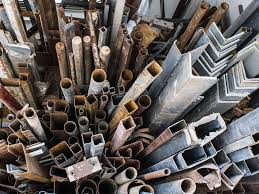

Se consiguen 900Kg de material reciclado.Pueden ahorrarse 140 litros de petróleo y 50.000 litros de agua (lo que supone un 90% menos de agua y un 50% menos de electricidad).
CARTONES

El reciclaje de latas de aluminio ahorra valiosos recursos naturales, energía, tiempo y dinero.Las latas de aluminio son únicas: Dentro de 60 días, una lata se recicla y se convierte en una nueva lata.El aluminio es un metal sostenible y se puede reciclar una y otra vez.
LATAS

Metales como aluminio, plomo, hierro, acero, cobre, plata y oro son reciclados fácilmente cuando no están mezclados con otras sustancias, porque pueden ser fundidos y cambiar de forma o adoptar la misma anterior. ... Si recuperáramos todos estos metalesserían una gran fuente de materias primas.
METALES

En primer lugar, se realiza la recolección y separación del papel de los contenedores destinados a ello, los de color azúl. Una vez en la planta de reciclaje de papel, este pasa por el proceso de pastificación delpapel, en el que se mezcla con disolventes químicos con el objetivo de separar las fibras del papel.
PAPELES

Se recogen en el contenedor amarillo, junto con las latas y los briks. Los materiales más apreciados, para el reciclaje, son los plásticosduros ( botellas y otros envases similares), donde destacan el PEAD, PEBD y el PET. La mayor cantidad de residuos provienen de botellas, de bolsas y sacos, y de filmes
PLASTICOS

Seguidamente el vidrio, ya limpio, se tritura formando un polvo grueso denominado calcín, que sometido a altas temperaturas en un horno, se funde junto con arena, hidróxido de sodio y caliza para fabricar nuevos productos que tendrán idénticas propiedades con respecto al vidrio fabricado directamente de los recursos.
VIDRIOS